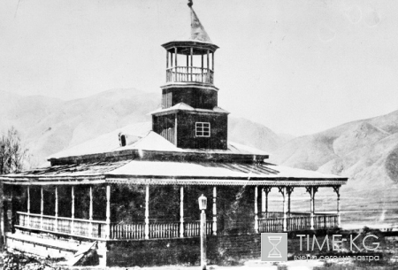
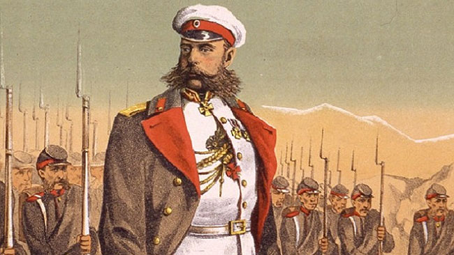
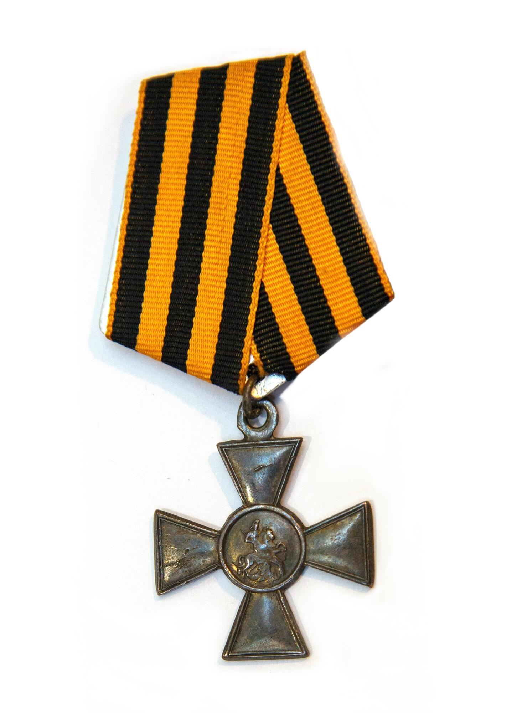
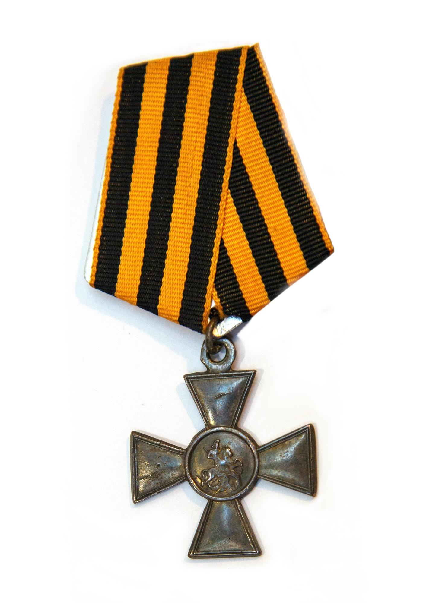

Достижения
1909 г. – Открыл и полностью финансировал частное медресе
(Мусульманская религиозная школа) в Кемине. Приглашал известных и
уважаемых преподавателей со всей Средней Азии. Он также отправлял
кыргызских детей учиться грамоте в Русскую школу грамматики в г.
Верный (г. Алма-Ата). Он также послал письмо царю Николаю II,
прося его создать мусульманские собрания, открыть медресе и школы,
где дети будут учиться на их родном языке.


Согласно распространённой версии, именно при посредничестве
Шабдан-Батыра состоялось примирение между российскими властями и
«Алайской царицей» Курманджан Даткой, возглавившей сопротивление
российской экспансии во время Туркестанских походов, в 1876 году.
Тогда, рискуя собственной жизнью, Джантаев отправился к генералу
Михаилу Скобелеву, возглавлявшему российские войска,
сосредоточенные в Туркестане, и договорился с ним об освобождении
Курманджан Датки.
Российские власти высоко ценили деятельность Шабдан-Батыра. За
большой вклад в развитие российско-кыргызских отношений ему был
пожалован казачий чин войскового старшины, аналогичный чину
полковника.
Был удостоен ряда российских наград, в том числе Георгиевского креста 4 степени, двух медалей на Станиславской и Анненской лентах, знака Общества Красного Креста, медали в память покорения Кокандского ханства, золотых часов с цепочкой и т. д. 
Был удостоен ряда российских наград, в том числе Георгиевского креста 4 степени, двух медалей на Станиславской и Анненской лентах, знака Общества Красного Креста, медали в память покорения Кокандского ханства, золотых часов с цепочкой и т. д. 